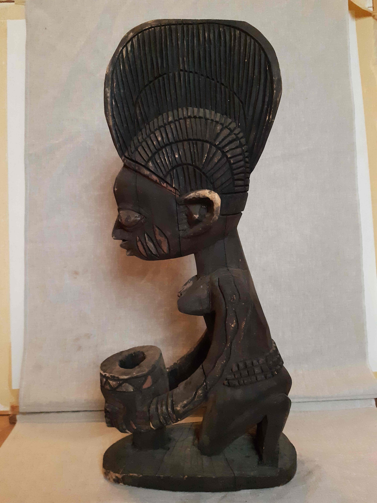
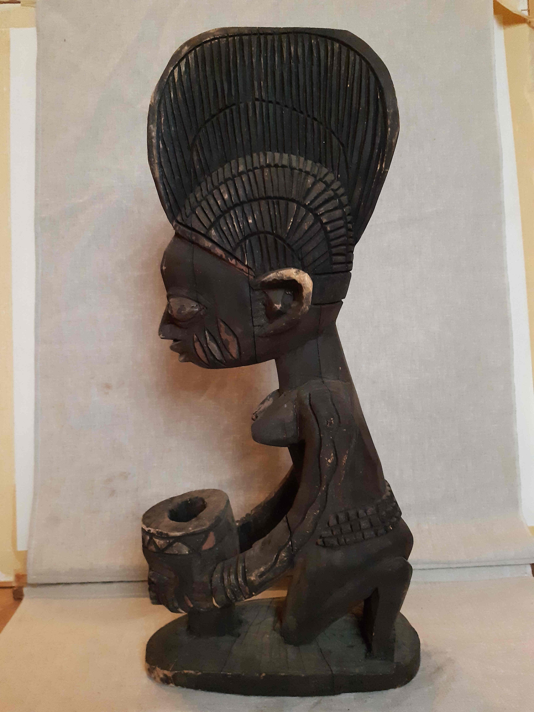
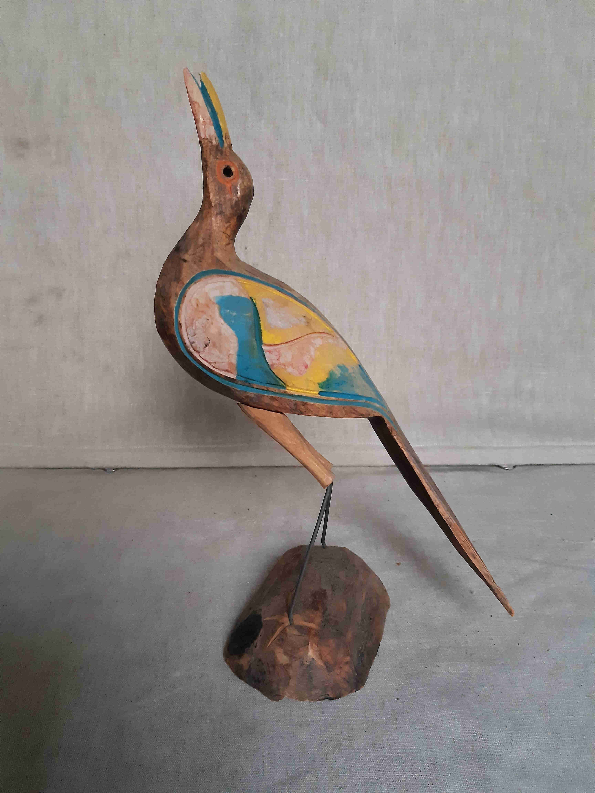
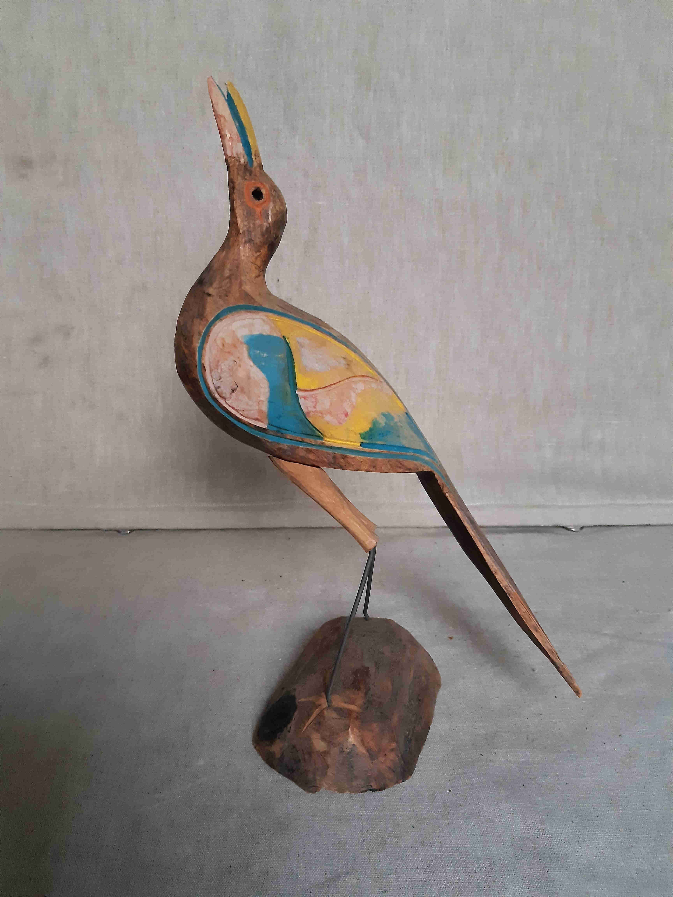

THE TÖRÖS COLLECTION

Our foundation has received another fantastic donation!!!
Károly Törös, a Hungarian-born South African swimming coach donated his valuable African art collection to our foundation. Károly Törös currently lives in Switzerland but has spent decades of his adventurous life in South Africa where he has collected many beautiful stone and wood sculptures, paintings and tools as an amateur collector. Although he no longer lives in Africa, his heart is still there. He has done a great deal to raise and educate African children. The achievement that he is most proud of in his career is that he coached the first ever black world champion swimmer. You can also read about Károly Törös in the September Forbes magazine.
We are planning a traveling exhibition displaying the artwork received, but some of the collection can also be purchased. The money raised will be used for the education of African children through our projects.
Part of the collection will be on display on 29th of September at the Stefania Palace during the This is Africa! community event.
Zimbabwean stone statue - size: 50 cm, weight: 30 kg


 


 
